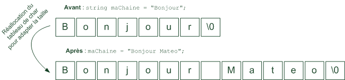
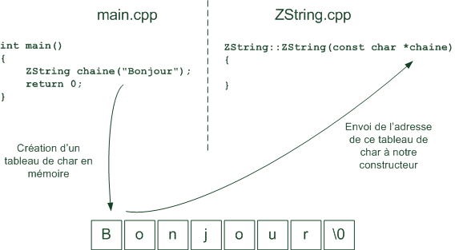
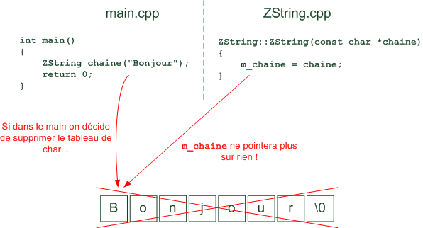
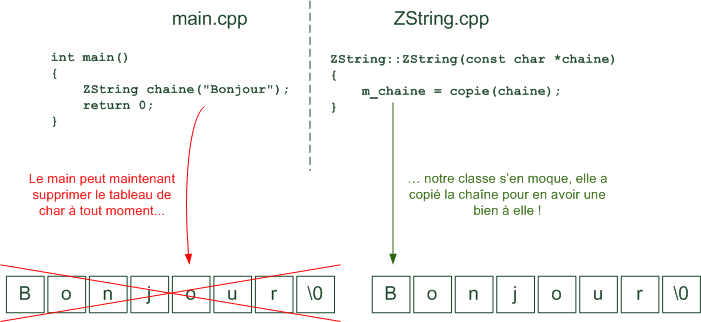

Vous avez dû vous en rendre compte en lisant le cours de C++ : la programmation orientée objet n'est pas simple à comprendre. Il faut un temps avant d'arriver à imaginer que l'on manipule des "objets". Les objets sont des sortes de boîtes qui contiennent un ensemble de variables et de fonctions qui modifient ces variables.
On peut voir la POO de 2 côtés :
Le côté utilisateur : cela correspond à utiliser les classes en créant des objets. C'est là que la POO se révèle simple et agréable.
Le côté créateur : cela correspond à créer les classes. C'est le plus délicat car il faut bien réfléchir avant de se lancer à coder.
Nous avons déjà vu la POO côté utilisateur avec l'exemple de la classe string fournie avec la bibliothèque standard du C++. Ce que je vous propose dans ce TP, c'est de voir maintenant le côté créateur en pratique. Nous allons recréer la classe string.
Vous vous demandez peut-être : pourquoi refaire la classe string si elle existe déjà ? Tout simplement parce que c'est un très bon exercice et que ça va beaucoup vous faire progresser.
Comme je sais que la POO n'est pas simple à appréhender quand on débute, je ne vous laisserai pas vous débrouiller tous seuls dans ce TP. Au contraire, je vais vous aider tout au long de la création de notre classe.
Notre objectif est de recréer la classe string de la bibliothèque standard du C++. C'est une classe qui gère les chaînes de caractères. Nous allons donc beaucoup manipuler les chaînes de caractères dans ce chapitre.
Vous avez déjà appris à utiliser la classe "string" dans un chapitre précédent de ce cours. Vous avez vu à quel point c'était simple : c'est la classe qui gère tout pour nous. Plus besoin de créer un tableau de la bonne taille, c'est la classe qui s'en occupe. Si la taille de la chaîne change, le tableau de caractères est automatiquement réalloué par la classe.
string maChaine = "Bonjour"; // Crée un tableau de caractères de 8 cases (\0 compris)
maChaine = "Bonjour Mateo"; // Change automatiquement la taille du tableau : 14 cases
Un objet string n'est au final rien d'autre qu'un objet qui contient un tableau de char (pour stocker la chaîne de caractères). La particularité c'est que c'est la classe qui gère la taille de ce tableau, l'utilisateur n'a pas à s'en soucier.
Quand vous modifiez le contenu de la chaîne, le tableau de char que l'objet maChaine contient est réalloué pour s'adapter à la nouvelle taille. Schématiquement il se passe donc ceci :

D'autre part, on bénéficie des outils puissants du C++ comme la surcharge des opérateurs. Cela nous permet d'écrire des choses intuitives comme :
C'est ce genre de choses que je veux que l'on arrive à refaire. On va y aller méthodiquement en commençant par écrire les constructeurs, le destructeur, puis on rajoutera des fonctionnalités à la classe en créant de nouvelles méthodes (comme une méthode pour connaître la longueur de la chaîne actuelle). On verra enfin la surcharge des opérateurs en dernier.
Bon assez bavardé, on a du pain sur la planche pour arriver à faire tout ça.
Choisir un nom
Il va falloir commencer par donner un nom à notre classe qui imite "string". On ne peut pas l'appeler "string" puisqu'il existe déjà une classe de ce nom dans la bibliothèque standard. Je vous propose de l'appeler ZString, pour "Zéro String" ;)
Créer un nouveau projet
Pour faire ce TP, vous allez devoir créer un nouveau projet. Utilisez l'IDE que vous voulez, moi pour ma part vous savez que j'utilise Code::Blocks ;)
Demandez à créer un nouveau projet console C++. Ce projet sera constitué de 3 fichiers que vous pouvez déjà créer :
main.cpp : ce fichier contiendra uniquement la fonction main. Dans la fonction main, nous créerons des objets basés sur notre classe ZString pour tester son fonctionnement. C'est le côté utilisateur.
ZString.h : ce fichier contiendra la définition de notre classe ZString avec la liste de ses attributs et les prototypes de ses méthodes. C'est une partie du côté créateur.
ZString.cpp : ce fichier contiendra l'implémentation des méthodes de la classe ZString, c'est-à-dire le "code" à l'intérieur des méthodes. C'est l'autre partie du côté créateur.
Le code de base de chaque fichier
Nous allons écrire un peu de code dans chacun de ces fichiers. Juste le strict minimum pour pouvoir commencer.
main.cpp
Ce fichier va contenir la fonction main, ainsi que les includes de iostream (pour faire des cout) et de ZString.h (pour pouvoir utiliser la classe ZString !).
#include <iostream>
#include "ZString.h"
using namespace std;
int main()
{
ZString chaine; // Crée un objet de type ZString (appel du constructeur par défaut)
return 0;
}
Comme vous pouvez le voir, le main se contentera dans un premier temps de créer un objet de type ZString appelé "chaine". Les objets commencent par une lettre minuscule par convention.
Ce code provoquera l'appel du constructeur par défaut de la classe ZString. Le constructeur est la méthode qui est appelée à chaque fois que l'on crée un nouvel objet, et là on parle de constructeur par défaut car on n'envoie aucun paramètre.
Le main est court mais on le complètera par la suite pour tester notre classe au fur et à mesure qu'on lui rajoutera des possibilités.
ZString.h
Ce fichier contiendra la définition de la classe ZString. Il fait aussi un include de iostream pour nos besoins futurs (nous aurons besoin de faire des cout dans la classe les premiers temps, ne serait-ce que pour débugger notre classe).
Vous noterez que je n'ai pas oublié de faire un #ifndef pour vérifier que le header n'a pas été inclus plusieurs fois. C'est une technique de protection que nous avons vue dans le cours de C et que je vous recommande d'utiliser dans chacun de vos headers.
La classe ZString est pour l'instant vide. Je l'ai séparée en deux : la partie publique et la partie privée. La partie publique est accessible de l'extérieur de la classe (par l'utilisateur) et la partie privée n'est accessible qu'à l'intérieur de la classe elle-même.
Je vous rappelle que la règle d'or est que tous les attributs d'une classe doivent être privés. C'est le principe d'encapsulation. Les méthodes, elles, peuvent être soit publiques soit privées selon les cas (elles sont souvent publiques, mais il arrive qu'on ait besoin de créer des méthodes privées).
ZString.cpp
Ce fichier doit contenir l'implémentation des méthodes de la classe. Pour l'instant, nous n'avons écrit aucune méthode, mais nous allons au moins faire un include de ZString.h, c'est le strict minimum ^^
#include "ZString.h"
C'est tout !
De quels attributs notre classe a-t-elle besoin ?
Comme vous le savez, une classe est constituée d'attributs et de méthodes. Les attributs sont des variables. Les méthodes interagissent sur ces variables.
De quels attributs notre classe ZString doit-elle être constituée, vous en avez pas une petite idée hmm ?
Réfléchissez, le but de notre classe est de gérer de manière intelligente une chaîne de caractères. Or, vous savez qu'une chaîne de caractères se présente en mémoire sous la forme d'un tableau de char, terminé par un \0 qui signifie "fin de chaîne" (j'espère que vous savez tout ça, sinon il est grand temps d'aller relire le chapitre sur les chaînes de caractères !).
Nous aurons donc besoin au moins d'un tableau de char en attribut. En plus de cela, il me semble nécessaire de mettre la taille de la chaîne de caractères (un int) en attribut aussi. Vous me direz : on peut toujours la recalculer (il suffit de compter le nombre de caractères jusqu'à l'\0), mais je pense que c'est une bonne idée de garder la taille de la chaîne en mémoire pour éviter d'avoir à la recalculer à chaque fois.
Nous allons donc modifier notre ZString.h pour y ajouter ces 2 attributs :
#ifndef DEF_ZSTRING
#define DEF_ZSTRING
#include <iostream>
class ZString
{
public:
private:
char *m_chaine; // Tableau de caractères (contiendra la chaîne)
int m_longueur; // Longueur de la chaîne
};
#endif
Nos attributs commencent toujours par le préfixe "m_". C'est une bonne habitude de programmation que je vous ai enseignée dans les chapitres précédents ;) Cela nous permettra par la suite de savoir si on est en train de manipuler un attribut de la classe ou une simple variable "locale" à une méthode.
Hé ! Tu avais dit qu'il fallait créer un tableau de char pour gérer la chaîne ! Or là je ne vois qu'un pointeur de char, pourquoi as-tu fait ça ?
J'attendais une question de ce genre :D
Je vais vous répondre par une autre question : quelle taille vous donneriez à ce tableau de char vu que vous ne connaissez pas la taille de la chaîne à stocker ?
Vous pourriez certes me dire "Bah il suffit de créer un très grand tableau de char, par exemple m_chaine[10000]". Mais ce serait mauvais. Non, ce serait même carrément nul :
Rien ne vous dit que personne ne dépassera jamais les 10 000 caractères.
Ca fait beaucoup de mémoire inutilisée pour rien.
Notre but est justement d'allouer un tableau en mémoire qui fasse pile la taille nécessaire.
Donc comme on ne sait pas la taille que fera le tableau dans la suite du programme, on crée juste un pointeur sur char. C'est nous qui allouerons la taille nécessaire par la suite, dans le constructeur (c'est son rôle, initialiser les attributs).
D'ailleurs en parlant de constructeur, je crois qu'il est temps de s'en occuper maintenant que nous nous sommes mis d'accord sur les attributs que la classe allait manipuler :)
Nous allons commencer par écrire les méthodes les plus importantes d'une classe : les constructeurs et le destructeur.
J'ai bien dit LES constructeurs, car on peut surcharger le constructeur (en faire plusieurs versions), et LE destructeur, car celui-ci ne peut pas être surchargé.
Je vous propose de créer 3 constructeurs et le destructeur pour commencer :
Le constructeur par défaut (celui qui ne prend pas de paramètre). Si l'utilisateur se sert de ce constructeur, la chaîne sera vide : "".
Un autre constructeur (une surcharge) qui prendra en paramètre une chaîne de caractères pour initialiser la ZString avec une chaîne. La ZString contiendra donc dès le départ la chaîne qu'on lui aura envoyée. Ce constructeur recevra en paramètre un tableau de char (un char *) correspondant à la chaîne envoyée par l'utilisateur pour initialiser la ZString.
Le constructeur de copie : quelle que soit la classe qu'on écrit, il est toujours conseillé d'écrire le constructeur de copie car il est souvent nécessaire. C'est un constructeur qui prend une référence vers un objet du même type (un const ZString &).
Le destructeur pour supprimer le tableau de char m_chaine avant que l'objet ne soit lui-même supprimé. Cela permet d'éviter les fuites de mémoire.
On créera d'autres constructeurs par la suite, mais pour l'instant nous commençons simplement :)
Commençons par ajouter les prototypes de nos méthodes dans ZString.h :
#ifndef DEF_ZSTRING
#define DEF_ZSTRING
#include <iostream>
class ZString
{
public:
ZString(); // Constructeur par défaut (crée une chaîne vide "")
ZString(const char *chaine); // Constructeur surchargé (crée la chaîne envoyée)
ZString(const ZString &chaine); // Constructeur de copie
~ZString(); // Destructeur (détruit le tableau de char pour libérer la mémoire)
private:
char *m_chaine;
int m_longueur;
};
#endif
Bien, voilà qui est fait. Il faut maintenant implémenter ces méthodes, rendez-vous dans le fichier ZString.cpp.
Le constructeur par défaut ZString()
On commence par implémenter le constructeur par défaut. Je vous rappelle que le but d'un constructeur est d'initialiser les attributs de la classe. La question est : quelle valeur on va leur mettre ? o_O
Comme on travaille sur le constructeur par défaut, vous pouvez voir que celui-ci ne prend pas de paramètre. C'est le constructeur qui est appelé lorsqu'on crée un nouvel objet de type ZString sans préciser de paramètre.
C'est précisément ce que l'on a fait dans le main.cpp que je vous ai donné plus haut :
ZString chaine; // Appel du constructeur par défaut (aucun paramètre envoyé)
Que doit contenir la chaîne lorsqu'on n'envoie rien ? Bah... rien :p Si l'utilisateur n'envoie aucun texte, nous n'allons rien mettre dans l'attribut m_chaine. Il est donc inutile d'allouer un tableau de char (y'a rien à stocker !).
Ce qu'on va faire en revanche, c'est mettre le pointeur m_chaine à NULL pour indiquer qu'il ne pointe sur rien pour le moment. Quant à la longueur de la chaîne m_longueur, bah elle vaudra 0 vu que pour l'instant notre objet ne contiendra aucune chaîne en mémoire :p
Le constructeur par défaut était simple. Les choses se corsent quand l'utilisateur envoie un paramètre lorsqu'il crée la chaîne dans main.cpp :
ZString chaine("Bonjour");
... ou encore (ça revient au même) :
ZString chaine = "Bonjour";
Lorsqu'un objet est créé de cette façon, cela appelle automatiquement le constructeur qui correspond à la signature ZString(const char *) car le fait d'écrire un texte entre guillemets dans le code source provoque la création d'un tableau de char par le compilateur.
Il va falloir écrire le code de ce constructeur dans ZString.cpp... Mais là les choses se corsent, suivez-moi bien.
Notre but est d'initialiser nos attributs m_chaine et m_longueur correctement, on est bien d'accord ? C'est le but du constructeur d'initialiser des attributs.
Le problème c'est que :
Pour m_longueur : on ne connaît pas la taille de la chaîne qu'on nous envoie ! Impossible d'initialiser m_longueur si on ne connaît pas la taille de la chaîne. On pourrait utiliser la fonction strlen de la bibliothèque C, mais notre but est que notre classe ZString soit autonome et qu'elle n'ait pas besoin de la bibliothèque du C (on est en C++ que diable !). Solution : il va falloir réécrire la fonction strlen() pour pouvoir calculer la longueur de la chaîne.
Pour m_chaine : on nous envoie un tableau de char (appelé chaine), mais il ne faut surtout pas écrire m_chaine = chaine; ! Pourquoi ? Parce que en faisant cela, vous faites pointer notre attribut m_chaine vers un tableau qui nous a été envoyé par l'utilisateur. Qu'est-ce qui vous dit que l'utilisateur ne va pas supprimer ce tableau par la suite ? Dans un tel cas, votre pointeur m_chaine pointerait sur un tableau qui n'existe plus ! Solution : copier le tableau qu'on nous envoie et affecter m_chaine à ce tableau pour s'assurer que personne d'autre ne pourra supprimer ce tableau.
Pour le problème de l'initialisation de m_longueur je pense que vous avez compris : on ne connaît pas la longueur de la chaîne et il va nous falloir écrire une fonction qui la calcule manuellement en comptant le nombre de caractères.
Par contre, je pense que le problème de l'initialisation de m_chaine mérite plus d'explications (et même un schéma en fait).
Tout d'abord, il faut savoir que lorsqu'on envoie au constructeur une chaîne de caractères entre guillemets, un tableau de char est automatiquement créé en mémoire. Celui-ci est ensuite passé en paramètre au constructeur :

L'erreur qu'on serait tenté de faire, c'est d'assigner l'attribut m_chaine directement au tableau chaine qu'on nous envoie, avec un code comme ceci :
Pourquoi ? Parce qu'en faisant pointer notre attribut m_chaine vers le tableau de char qu'on nous a envoyé, on prend le risque que ce tableau de char soit supprimé par le main ! Dans ce cas, si le tableau est supprimé par le main, notre attribut m_chaine ne pointera plus sur rien et on perdra la chaîne !

La solution ? Comme on l'a vu dans un des chapitres précédents, il faut copier la chaîne (en appelant une fonction de copie que l'on écrirera) et faire pointer m_chaine vers cette copie.
ZString::ZString(const char *chaine)
{
m_chaine = copie(chaine); // Bonne idée : copier la chaîne pour en avoir une version propre à la classe
}

Comme notre classe sera la seule à connaître la copie, elle sera sûre que personne d'autre ne la supprimera dans le programme !
Pour que ce constructeur marche, il nous faut écrire 2 fonctions :
copie : qui copie un tableau de char et renvoie un pointeur vers la copie (équivalent de strcpy du C).
longueur : qui calcule la longueur du tableau de char qu'on lui envoie (équivalent de strlen du C).
Ce sont des fonctions que vous avez déjà peut-être écrites si vous avez suivi mon cours de C. C'est un bon exercice que d'essayer de les réécrire.
Je vous donne la solution, sans l'expliquer, parce que ça ça ne devrait pas être nouveau pour vous (ou alors faut revoir votre cours de C sur les chaînes de caractères !) :
int ZString::longueur(const char *chaine)
{
int i = 0;
while (chaine[i] != '\0')
{
i++;
}
return i;
}
char *ZString::copie(const char *chaine)
{
int taille = longueur(chaine);
char *chaineCopie = new char[taille + 1]; // +1 pour stocker \0
for (int i = 0 ; i < taille ; i++)
{
chaineCopie[i] = chaine[i];
}
chaineCopie[taille] = '\0';
return chaineCopie;
}
Le constructeur de copie ZString(const ZString &)
Le constructeur de copie est un constructeur très utile qui est appelé dans plusieurs cas par le compilateur. Je ne reviens pas sur ces cas mais je vous invite en revanche à relire la partie sur le constructeur de copie dans les chapitres précédents.
Le constructeur de copie est un constructeur qui prend en paramètre une référence vers un autre objet du même type. Voici le constructeur de copie de notre classe ZString :
Ce constructeur est à peu de choses près identique au constructeur qu'on vient d'écrire il y a 2 minutes. La seule différence est qu'il prend en entrée une ZString appelée chaine. Pour récupérer le tableau de char de la ZString, il suffit d'écrire chaine.m_chaine. Cela nous permet d'envoyer le tableau de char que les méthodes copie et longueur attendent.
Vous vous demandez peut-être pourquoi on n'a pas tout simplement écrit par exemple : m_chaine = copie(chaine); La réponse est simple. Dans ce constructeur :
chaine est de type ZString (regardez le paramètre d'entrée)
chaine.m_chaine est de type char *
Or nos méthodes copie et longueur attendent un char *, voilà pourquoi il faut dans ce cas envoyer chaine.m_chaine.
Comment peut-on avoir le droit d'écrire chaine.m_chaine ? Je croyais que m_chaine était un attribut privé, et donc qu'on ne pouvait pas y accéder ? Il n'aurait pas fallu créer une méthode accesseur getChaine() plutôt à la place ?
En effet, on aurait très bien pu créer une méthode accesseur getChaine(). Faites-le si vous voulez d'ailleurs. Normalement, on n'a pas le droit d'accéder aux membres privés d'une classe. Mais là nous sommes dans une exception, car nous travaillons dans la même classe (nous sommes dans la classe ZString et nous essayons d'accéder à un attribut privé d'un autre objet de type ZString, ce qui est autorisé).
Le destructeur ~ZString()
On arrive maintenant au destructeur. Son rôle est de détruire les attributs alloués dynamiquement en mémoire avant que l'objet ne soit supprimé (je vous rappelle que le destructeur est automatiquement appelé lorsqu'un objet va être supprimé).
Le seul attribut alloué dynamiquement (avec un new[]), c'est m_chaine. Il faut penser à le supprimer avec un delete[].
Notre destructeur sera tout simple :
ZString::~ZString()
{
delete[] m_chaine;
}
Si on ne fait pas ça, le tableau de char m_chaine persistera en mémoire après la suppression de l'objet. Du coup, des tableaux "perdus" risqueraient de se ballader en mémoire et on assisterait à ce qu'on appelle des "fuites de mémoire". Votre programme prendrait beaucoup de place en mémoire parce qu'il aurait oublié de supprimer la mémoire dont il n'a plus besoin !
Tester le code
Il est grand temps de compiler pour vérifier qu'on n'a pas fait d'erreur. Pour le moment, on va lancer le main que je vous ai donné au tout début, ce qui va provoquer l'appel du constructeur par défaut :
int main()
{
ZString chaine;
return 0;
}
Compilez, lancez. La console n'affichera rien (c'est normal, tout se passe dans la mémoire) mais si vous n'avez pas de plantage c'est que c'est bon signe déjà :D
Testons le constructeur qui prend en paramètre un tableau de char pour initialiser la chaîne (celui qu'on a eu tant de mal à écrire, ne me dites pas que vous l'avez déjà oublié :D ) :
int main()
{
ZString chaine("Bonjour");
return 0;
}
Compilez, lancez. Toujours pas d'erreur ? C'est très bien, c'est qu'on est sur la bonne voie :)
Hé ! J'ai essayé de faire un cout de ma chaîne et ça ne marche pas ! Pourquoi ?
Le compilateur vous répondra qu'il ne peut pas exécuter le cout car cout ne sait pas lire les objets de type ZString (pour lui c'est comme une boîte noire, il ne sait pas ce qu'il y a à l'intérieur). Il va falloir le lui apprendre en surchargeant l'opérateur << comme on l'a appris dans le chapitre sur la surcharge des opérateurs. On verra ça un peu plus loin.
Ok, mais en attendant comment je fais pour afficher ce que contient ma chaine de type ZString ?
Comme surcharger l'opérateur << est un peu délicat et compliqué, on ne le verra que plus loin. En attendant par contre, vous pouvez écrire une méthode afficher() dans la classe ZString qui affichera la chaîne :
Tout ce que la méthode afficher() fait, c'est afficher la chaîne de caractères qu'elle stocke. Ca consiste à faire un cout de m_chaine. C'est tout bête, mais si vous ne le dites pas à l'ordinateur il ne pourra pas deviner :p
Dans le main, vous pouvez maintenant afficher votre chaîne !
int main()
{
ZString chaine("Bonjour");
chaine.afficher();
return 0;
}
Nous avons écrit des constructeurs, un destructeur et une méthode afficher(). Avec ça, nous pouvons créer des chaînes de type ZString et les afficher. Cool. Mais c'est pas encore bien passionnant.
Les choses vont commencer à devenir intéressantes à partir de maintenant. Nous allons faire quelques surcharges d'opérateurs pour profiter de toute la puissance du C++.
Nous allons surcharger les opérateurs suivants :
L'opérateur = : c'est l'opérateur d'affectation qui permet d'affecter une nouvelle valeur à la chaîne après sa création.
L'opérateur + : on va s'en servir pour combiner 2 chaînes de caractères (très pratique).
L'opérateur << : nous allons surcharger l'opérateur << pour que cout soit capable d'afficher des ZString.
Au boulot !
Surcharger l'opérateur =
Si on souhaite changer la chaîne après la création de la ZString, il faut surcharger l'opérateur =. Je vous propose de surcharger l'opérateur = 2 fois :
Une fois pour prendre en paramètre un tableau de char (char *).
Commençons par le cas le plus simple : celui où on nous envoie un char * (un texte entre guillemets par exemple).
Comme vous l'avez appris dans le chapitre sur la surcharge des opérateurs (je n'y reviens pas), le prototype de la méthode devra être le suivant :
ZString operator=(const char *chaine);
A nous d'implémenter la méthode. Le but de l'opérateur = est de mettre dans l'objet la chaîne qu'on lui envoie en paramètre. Pour des raisons techniques que je ne détaillerai pas ici, il faudra que l'objet se renvoie lui-même à la fin de la méthode (via un return *this;).
On doit dans un premier temps supprimer le tableau de char m_chaine que contenait notre objet. En effet, nous allons affecter une nouvelle chaîne à notre objet qui va "écraser" l'ancienne. Il faut bien penser à supprimer l'ancienne d'abord, sinon l'ancienne chaîne va persister en mémoire et va consommer de la mémoire pour rien !
Vous noterez qu'à part ça et le return, c'est exactement le même code que le constructeur qu'on a écrit tout à l'heure. Et c'est logique, le but de cette méthode est le même (sauf qu'elle ne s'exécute pas au même moment) : il lui faut copier la chaîne qu'on lui envoie pour en avoir une propre à notre classe, et adapter l'attribut m_longueur pour qu'il indique la bonne longueur de chaîne.
Le return *this, je ne reviens pas dessus, c'est comme ça que tout operator= doit terminer, point barre ;)
On peut maintenant tester ce code dans le main et admirer comme c'est beau quand ça marche :D
Nous avons réussi à surcharger l'opérateur = pour qu'il accepte les tableaux de char, maintenant nous allons faire en sorte qu'il accepte aussi les ZString (pour pouvoir affecter une ZString par une autre ZString).
Le code de cette méthode sera quasiment le même, il faut juste s'adapter au fait que l'on reçoit une référence vers une ZString au lieu d'un tableau de char :
int main()
{
ZString chaine("Bonjour");
ZString autreChaine;
autreChaine = chaine; // Vaudra "Bonjour" : appel de operator=(ZString &)
// Vérifions que les chaînes soient les mêmes
chaine.afficher();
autreChaine.afficher();
return 0;
}
Si tout va bien, les deux affichages devraient produire le même résultat :
Bonjour
Bonjour
Parfait :) On peut maintenant affecter une ZString avec une autre ZString.
Surcharger l'opérateur +
Passons à la surcharge de l'opérateur +, qui va nous permettre d'assembler 2 chaînes de caractères. Là encore, je pense qu'il serait bien d'écrire 2 versions de cette méthode :
Une fois pour prendre en paramètre un tableau de char (char *).
Un opérateur + ne doit pas modifier l'objet lui-même mais retourner un résultat correspondant à la somme des objets qu'on additionne (ouf ! :D ). Cela veut dire qu'il ne faut pas trop se calquer sur l'opérateur = car ça fonctionne différemment.
L'écriture de cette méthode est assez délicate (il faut un peu réfléchir quoi :-°). Voilà comment je vous propose d'additionner les 2 chaînes :
ZString ZString::operator+(const char *chaine)
{
int tailleTotale = m_longueur + longueur(chaine);
char *sommeChaines = new char[tailleTotale + 1];
for (int i = 0 ; i < m_longueur ; i++)
{
sommeChaines[i] = m_chaine[i];
}
for (int i = m_longueur ; i < tailleTotale ; i++)
{
sommeChaines[i] = chaine[i - m_longueur];
}
sommeChaines[tailleTotale] = '\0';
ZString resultat(sommeChaines);
delete[] sommeChaines;
return resultat;
}
Ce qu'il faut bien comprendre, c'est qu'on travaille sur 2 chaînes :
m_chaine : correspondant à la chaîne de l'objet dans lequel on est (ici "Bonjour").
chaine : qui est la chaîne qu'on ajoute (ici " Mateo").
Vous noterez qu'on se sert ici de l'attribut m_longueur de notre objet pour éviter d'avoir à recalculer la longueur de la chaîne contenue dans notre objet. Après le reste, ben c'est un algorithme. On crée une chaîne sommeChaines de la taille correspondant à la somme des 2 chaînes, puis on fait une première boucle pour y ajouter m_chaine, et une seconde boucle pour y ajouter chaine.
Enfin, on crée un objet de type ZString (car il faut retourner une ZString impérativement) et on lui envoie la somme des chaînes pour que notre nouvelle ZString contienne "Bonjour Mateo". Enfin, on n'oublie pas de supprimer le tableau de char sommeChaines qu'on avait alloué dynamiquement et qui ne nous sert plus à rien maintenant.
operator+(ZString &)
Cette surcharge fonctionne de la même manière mais prend en entrée une autre ZString. Il suffit d'adapter un peu le code, le plus dur ayant déjà été fait.
Et hop !
ZString ZString::operator+(const ZString &chaine)
{
int tailleTotale = m_longueur + chaine.m_longueur;
char *sommeChaines = new char[tailleTotale + 1];
for (int i = 0 ; i < m_longueur ; i++)
{
sommeChaines[i] = m_chaine[i];
}
for (int i = m_longueur ; i < tailleTotale ; i++)
{
sommeChaines[i] = chaine.m_chaine[i - m_longueur];
}
sommeChaines[tailleTotale] = '\0';
ZString resultat(sommeChaines);
delete[] sommeChaines;
return resultat;
}
Le principe est le même. On profite du fait que l'élément qu'on nous envoie est une ZString pour utiliser son attribut m_longueur (ce qui nous évite d'avoir à recalculer la longueur de sa chaîne).
Surcharger l'opérateur <<
Nous souhaitons maintenant pouvoir faire des cout sur des ZString. C'est un peu délicat, car il faut en théorie modifier la classe qui est derrière l'objet cout.
En effet, faire :
ZString chaine;
cout << chaine;
... revient à écrire comme vous le savez maintenant :
ZString chaine;
cout.operator<<(chaine);
Il faudrait donc surcharger la méthode operator<< de la classe qui gère l'objet cout, à savoir la classe ostream.
Le problème, comme je vous l'avais déjà expliqué, c'est qu'on ne peut pas modifier la classe ostream, on n'y a pas accès. En revanche, on peut tricher en créant une simple fonction (comme en C !) de cette forme-là :
J'ai placé cette fonction dans ZString.cpp. Son prototype est dans ZString.h, mais attention, mettez-le en-dehors de la déclaration de la classe car ce n'est pas une méthode de la classe !
Pourquoi ne pas avoir écrit chaine.m_chaine cette fois ?
Jusqu'ici je pouvais le faire car j'étais à l'intérieur même de la classe, et donc j'avais accès à tous les attributs privés, même s'il s'agissait d'un autre objet de la même classe.
Là, on est dans une fonction qui n'a rien à voir avec la classe ZString. Elle n'a donc pas accès aux attributs. C'est pour cette raison que j'appelle la méthode getChaine() de ZString... Je sais. On n'avait pas écrit de méthode getChaine() jusqu'ici. Il s'agit juste d'un accesseur : vous devriez être capable de l'écrire en 10s chrono, il fait juste un return m_chaine; :)
On peut maintenant faire des cout d'objets de type ZString dans le main ! :D
Je crois que vu tout ce qu'on a fait jusqu'ici, un petit récapitulatif s'impose. Je vais vous donner le code source de chacun des 3 fichiers (main.cpp, ZString.cpp et ZString.h) puis je vous proposerai de télécharger le projet en l'état actuel.
Nous finirons ensuite ce TP par une liste de suggestions d'améliorations de la classe ZString. Elle marche, certes, mais on pourrait encore lui rajouter de nombreuses fonctionnalités !
main.cpp
Ce fichier contient le main qui fait quelques tests sur la classe ZString :
#include <iostream>
#include "ZString.h"
using namespace std;
int main()
{
ZString chaine("Bonjour");
ZString nom = "Mateo"; // Cette façon d'initialisation revient au même
ZString resultat;
resultat = chaine + " " + nom;
cout << "Le resultat vaut maintenant : " << resultat << endl;
return 0;
}
Le résultat qui doit s'afficher si tout va bien est :
Le resultat vaut maintenant : Bonjour Mateo
Avec ce code on teste le constructeur, le destructeur, l'opérateur =, les opérateurs +, le cout...
ZString.h
Le coeur de notre classe est là. On y trouve la définition de ZString, ses attributs, ses méthodes. On trouve aussi le prototype de l'opérateur <<, en-dehors de la classe comme je vous l'ai dit car c'est l'opérateur de la classe ostream que l'on modifie là, pas celui de la classe ZString.
C'est le plus gros fichier, celui qui nous aura donné le plus de fil à retordre aussi ^^ Il contient l'implémentation de toutes les méthodes de la classe ZString :
Dans un premier temps, je vous conseille de bien potasser mon code source, d'essayer de le lire, le relire, le comprendre. Il y a peu de chances pour que vous ayez tout saisi du premier coup, mais si vous prenez le temps de bien analyser mon code et de relire mes explications, je suis sûr que vous allez progressivement vous sentir plus à l'aise là-dedans :)
Maintenant, ce serait dommage de s'arrêter en si bon chemin vous ne trouvez pas ? Je vous propose une série de modifications et ajouts que vous pouvez faire sur la classe ZString pour améliorer ses fonctionnalités :
On vient de faire l'accesseur getChaine(), mais ça pourrait être bien aussi de faire l'accesseur getLongueur() pour que l'utilisateur puisse savoir à tout moment la longueur de sa chaîne.
Une méthode vider() pourrait supprimer le contenu de la ZString. Il faudrait supprimer la chaîne mais aussi penser à remettre l'attribut m_longueur à 0.
Une méthode recherche() pourrait faire une recherche dans la ZString. On pourrait même l'écrire en 3 versions :
Une qui prend en paramètre un char (recherche d'un caractère)
Une qui prend en paramètre un char * (recherche d'une chaîne)
Une autre qui prend en paramètre une ZString (recherche d'une chaîne).
Dans le même style, on peut imaginer une méthode remplacer() qui prend au moins 2 paramètres : ce que vous recherchez, et par quoi vous voulez le remplacer.
On n'a pas surchargé l'opérateur de comparaison == avec operator==() ! Si on veut pouvoir tester if (chaine1 == chaine2), il faut que l'on ait écrit cette méthode ! De même, vous devriez écrire operator!=() pour tester si 2 chaînes sont bien différentes, ça va de paire.
Plus difficile : essayez de surcharger l'opérateur [] avec la méthode operator[](). Le but est de pouvoir écrire :
Le paramètre passé à cette méthode est un nombre (int) correspondant au caractère de la chaîne que l'on veut extraire. En écrivant cette méthode, on peut alors récupérer n'importe quel caractère de la chaîne comme on le faisait avec les tableaux de char !
Nous découvrirons dans un prochain chapitre ce que sont les méthodes statiques et constantes. Lorsque vous aurez lu ce chapitre, voyez si vous ne pouvez pas faire en sorte que certaines méthodes soient :
Constantes : ce sont les méthodes qui ne modifient pas les attributs de votre objet.
Statiques : ce sont les méthodes qui n'interagissent pas du tout avec les attributs de votre objet et qui pourraient être de simples fonctions. C'est le cas de copie() et longueur() par exemple.
Il vous faudra peut-être faire des recherches, voire demander de l'aide pour écrire certaines de ces méthodes. Il y a du challenge, mais le jeu en vaut la chandelle !
Vous savez quoi ? Je crois que c'est un des premiers chapitres que j'écris où je suis soulagé d'arriver à la fin :lol:
Il faut dire que ce TP n'était pas facile, vous comprenez pourquoi il était impensable de vous lâcher dans la nature tous seuls. J'ai tenu à vous expliquer pas à pas mon raisonnement et ma démarche pour écrire une classe en C++.
Je vous rassure : en temps normal on ne s'amuse pas à réécrire la classe string ! Toutefois, c'est vraiment un excellent exercice. Si vous prenez le temps de bien analyser ce qu'on a fait et de faire les améliorations proposées, vous allez vraiment progresser en C++. Vous voyez que ce n'est pas un langage simple, mais avec un peu de pratique on finit par acquérir certains automatismes qui limitent nos erreurs. Et encore. Si vous saviez le nombre d'erreurs que j'ai faites avant d'arriver à faire marcher la classe ZString ! :p
Tout ça pour vous dire qu'il ne faut pas paniquer devant cette apparente difficulté. Retroussez vos manches, relisez, réfléchissez. Vous progresserez !